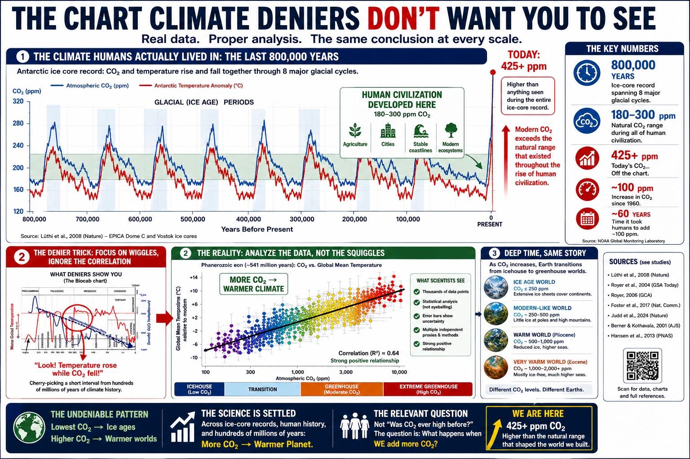
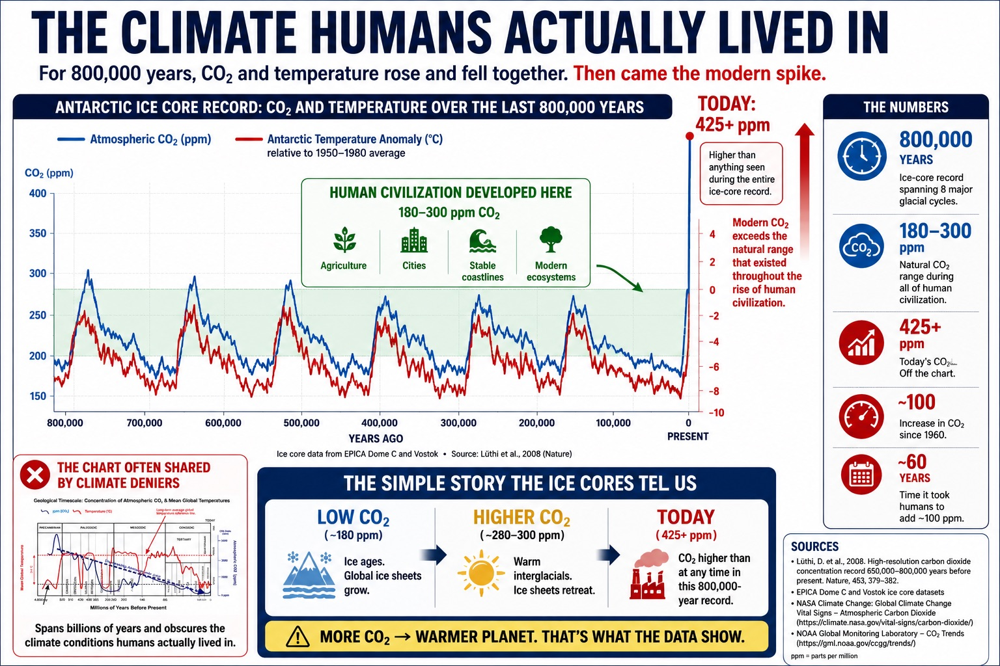
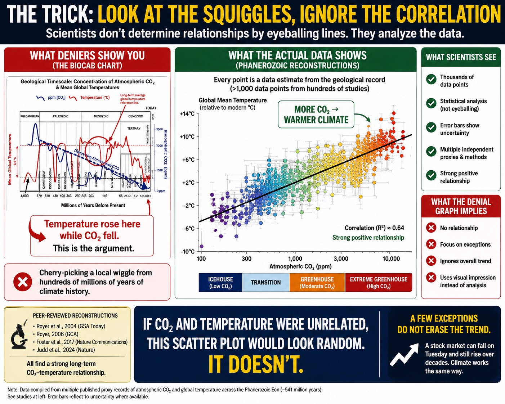
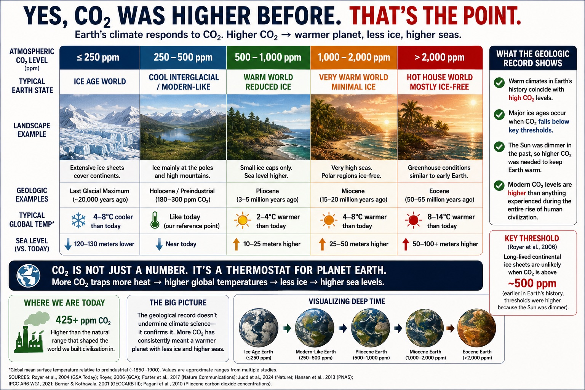

CO₂ and Temperature: The Correlation Deniers Don’t Want You to Understand
A common climate-denial graphic tries to make modern CO₂ look harmless by stretching the chart across deep geological time. That is not science. That is visual misdirection with a lab coat thrown over it.

The full argument: CO₂, temperature, rate of change, and human-scale risk.
The trick: geological time vs human time
Earth has had higher CO₂ before. That part is true. The dishonest part is pretending that makes today’s rapid increase safe. Past natural changes usually unfolded over thousands to millions of years. Today, industrial civilization has pushed CO₂ sharply upward in just a few generations.

The pattern is not random
Over geological time, higher CO₂ is strongly associated with a warmer planet once other major factors are accounted for. The denial argument relies on eyeballing noisy, compressed charts instead of dealing with the actual physics and reconstructions.

What matters is speed and vulnerability
The issue is not whether life existed under different ancient climates. The issue is whether modern agriculture, coastlines, infrastructure, ecosystems, water systems, and cities can adapt to rapid warming on human timescales.

The bottom line
“CO₂ was higher before” is not a rebuttal to climate science. It is an admission that CO₂ has been powerful enough to reshape Earth’s climate before. The real question is why anyone would want to run that experiment again with modern civilization sitting directly in the blast radius.
```